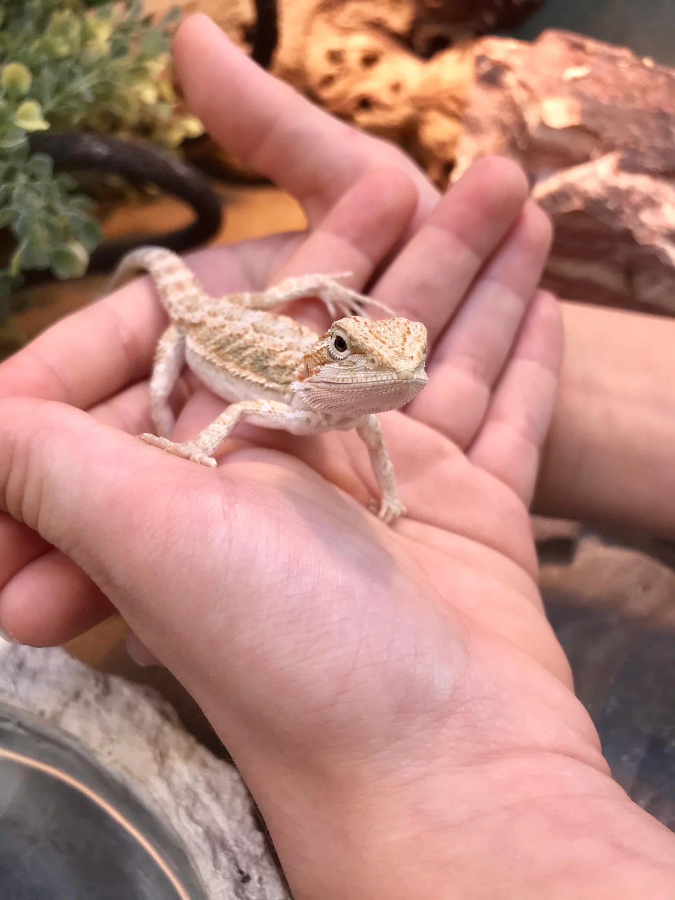

Bearded dragons live in dry, hot environments like deserts and rocky areas in Australia. They are used to warm temperatures and spend a lot of time in the sun to stay active. In the wild, they often sit on rocks or branches to soak up heat, which is called basking. This helps them control their body temperature since they are cold-blooded animals. Bearded dragons are active during the day, which means they are diurnal. At night, they usually find a safe place to rest or sleep. Their lifestyle depends a lot on having the right amount of heat and light. Bearded dragons are usually calm and not very aggressive, which is one reason people like them as pets. They often spend their time exploring their area, climbing, or just relaxing. Even though they can live alone, they still show behaviors like head bobbing or arm waving to communicate. These actions can mean things like showing dominance or being friendly. In captivity, they need a tank with enough space to move around and climb. They also need places to hide so they can feel safe. Having a good setup helps them stay active and not get stressed. Another part of a bearded dragon’s lifestyle is shedding and brumation. As they grow, they shed their skin, which can happen more often when they are younger. Shedding helps them get rid of old skin so new skin can grow. Brumation is similar to hibernation and usually happens in cooler months. During this time, they may sleep more and eat less. Not all bearded dragons brumate, but many do. Their lifestyle changes based on temperature, light, and their environment, so it’s important to keep those things stable.

